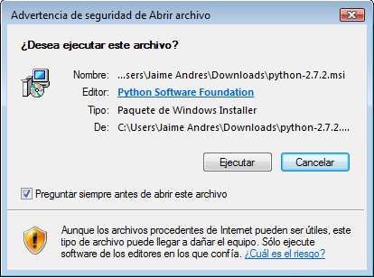
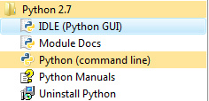
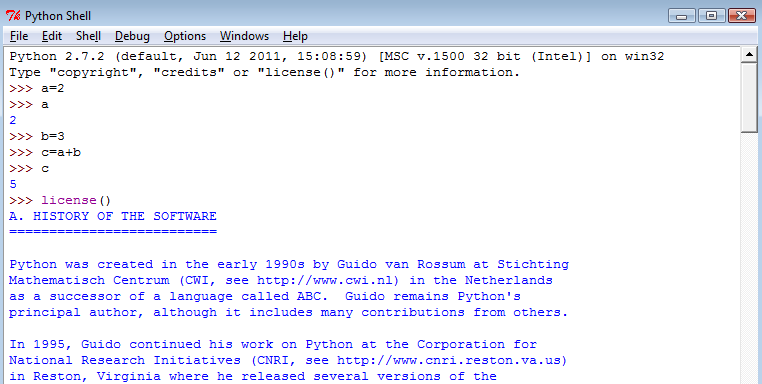
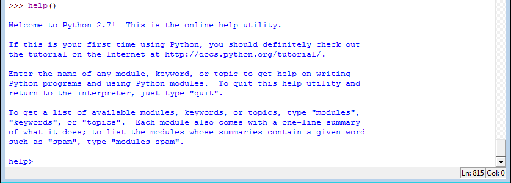
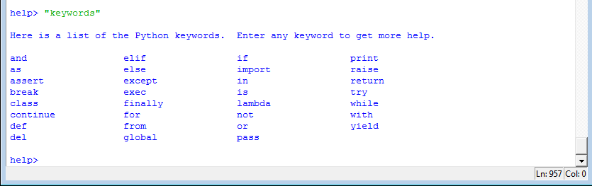

Instalación de Python en Windows
- Jaime A. Valencia V.
- Facultad de Ingeniería
- Universidad de Antioquia
El archivo de instalación del lenguaje Python se obtiene en su página principal (Python, 2011a), entrando a su menú izquierdo en la pestaña de DOWNLOAD como se muestra en la siguiente imagen:

La nueva carpeta creada será designada C:\Python27 y se creará en el menú de programas una nueva pestaña como lo muestra la siguiente imagen:
Para mi caso particular, al estar trabajando en un portátil con sistema operativo Windows Vista, selecciono la opción Python 2.7.2 Windows installer, lo cual hace que se descargue el archivo Python 2.7.2.msi de un tamaño de 15.596 kB.
Al ejecutar el archivo desde el Windows, se inicia el programa de instalación creando una nueva carpeta en el disco principal si no se especifica nada diferente. La siguiente imagen ilustra la primera ventana de dialogo para iniciar la instalación.

La nueva carpeta creada será designada C:\Python27 y se creará en el menú de programas una nueva pestaña como lo muestra la siguiente imagen:

Con este menú ya se tiene el interface interprete de Python con solo activar la opción IDLE(Python GUI). (IDLE viene del ingles 'Integrated DeveLopment Environment'). El primer pantallazo que obtuve de Python, luego de iniciar el interface, se muestra en la Imagen siguiente. Este pantallazo muestra la fecha de instalación del 12 de junio de 2011 y la versión win32 que significa que se está usando un computador de 32 bits con Windows como sistema operativo. Estos datos cambian dependiendo de dónde se realice la instalación y a partir de aquí ya se puede empezar a programar en lenguaje Python.

Una primera información sobre el lenguaje Python y su licencia se obtiene invocando la función interna license() como lo muestra la imagen anterior. También se puede obtener una primera documentación del lenguaje usando la función interna help() como lo muestra la siguiente imagen:

Estando en esta opción de ayuda ('help') se pueden obtener los comandos de Python invocando la palabra en inglés keywords, como lo muestra la siguiente imagen. En la parte superior del interface también se cuenta con un menú de ayuda para abrir el documento principal en otra ventana, como se observa en la imagen de Interface de Python.

Existe gran cantidad de sitios con información de este lenguaje (Python, 2011a) y se puede acceder a ellos usando un navegador cualquiera con la palabra clave Python. Entre ellos algunos de Colombia (El directorio, 2011; Python Colombia, 2011) y páginas con libros completos del lenguaje Python (González, 2011).